Ok, I don't drink alchohol. I'm boring that way. So instead, I try and find the oddest drinks I can find at any opportunity. The stronger a drink's flavor is, the better*. I want them to punch me in the face (or at the very least, make me scrunch my face in disgust).
p.s. If you want to know what something is, hover over it. If there is an outline, I've written something extra too.
p.p.s. Tiers are ordered from best to worst
*This list is not a ranking of how flavorful these drinks are, just how much I like them.
S
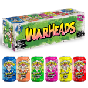
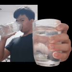
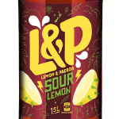
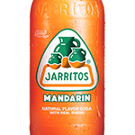
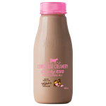
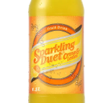
A
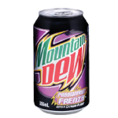
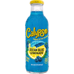
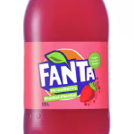
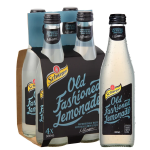
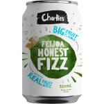
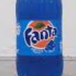
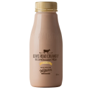
B
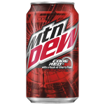
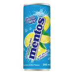
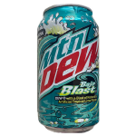
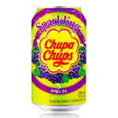
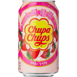
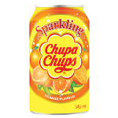
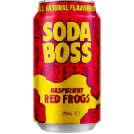
C
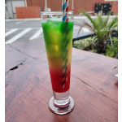
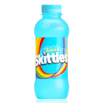
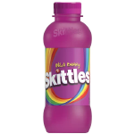
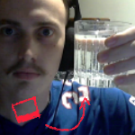
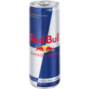
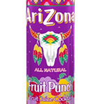
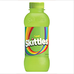
Q
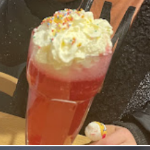
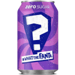